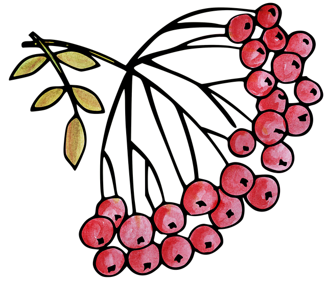

Wild Berrys

Image by ArtRose on Pixabay
Description:
You can do this while searching for the perfect spot to catch a salmon for the savage salmon recipe.
Ingredients:
- Some knowledge about edible berries and/or poisonous ones.
- (Optional) In case you do not have the previous ingredient, you can replace it by asking someone you don't like very much to try the berries you find.
Steps:
- Pay attention to every kind of colored little balls you find on trees or shrubs.
- Cut the branch where you find them.
- Collect enough of them to enjoy as a dessert. They're so sweet on their own that don't need any additional ingredients!